Tecnología
71 recursos de Tecnología en español, sin preparación y con solucionario: fichas de lectura, búsquedas del tesoro y más, filtrables por grado.
71 recursos
Grado
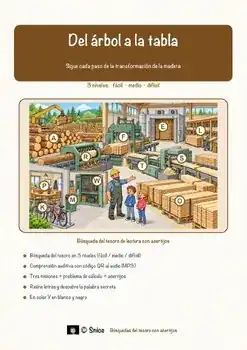
«Del árbol a la tabla» – Búsqueda del tesoro de lectura
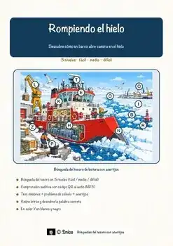
«Rompiendo el hielo» – Búsqueda del tesoro de lectura
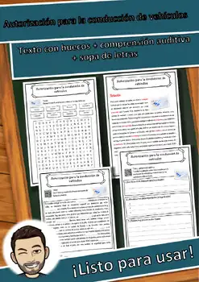
Autorización para la conducción de vehículos – Ficha de lectura: texto con huecos, comprensión auditiva y sopa de letras
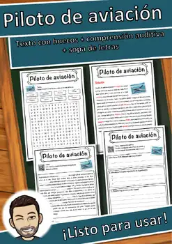
Piloto de aviación – Ficha de lectura: texto con huecos, comprensión auditiva y sopa de letras
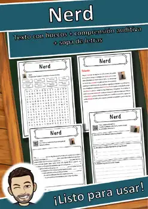
Nerd – Ficha de lectura: texto con huecos, comprensión auditiva y sopa de letras
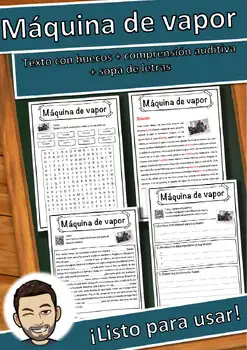
Máquina de vapor – Ficha de lectura: texto con huecos, comprensión auditiva y sopa de letras
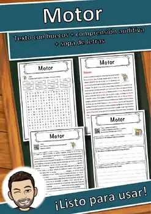
Motor – Ficha de lectura: texto con huecos, comprensión auditiva y sopa de letras
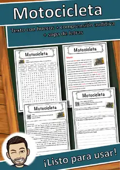
Motocicleta – Ficha de lectura: texto con huecos, comprensión auditiva y sopa de letras
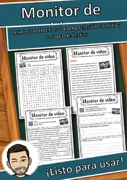
Monitor de video – Ficha de lectura: texto con huecos, comprensión auditiva y sopa de letras
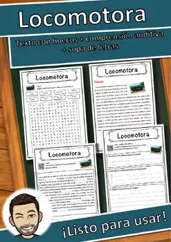
Locomotora – Ficha de lectura: texto con huecos, comprensión auditiva y sopa de letras
Hermanos Montgolfier – Ficha de lectura: texto con huecos, comprensión auditiva y sopa de letras
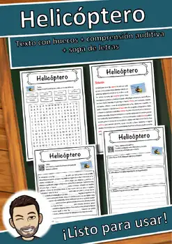
Helicóptero – Ficha de lectura: texto con huecos, comprensión auditiva y sopa de letras
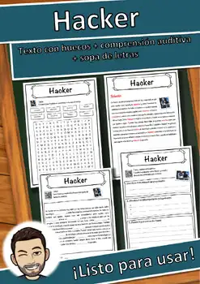
Hacker – Ficha de lectura: texto con huecos, comprensión auditiva y sopa de letras
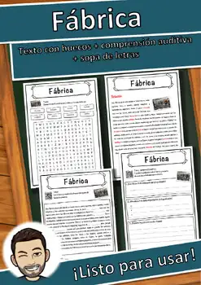
Fábrica – Ficha de lectura: texto con huecos, comprensión auditiva y sopa de letras
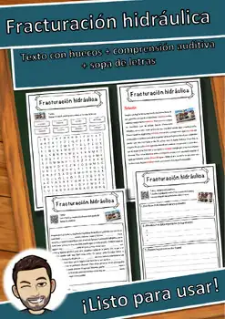
Fracturación hidráulica – Ficha de lectura: texto con huecos, comprensión auditiva y sopa de letras
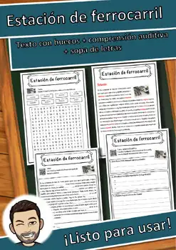
Estación de ferrocarril – Ficha de lectura: texto con huecos, comprensión auditiva y sopa de letras
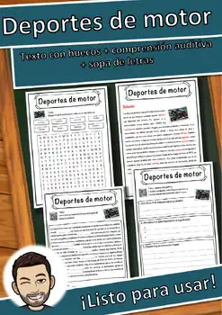
Deportes de motor – Ficha de lectura: texto con huecos, comprensión auditiva y sopa de letras
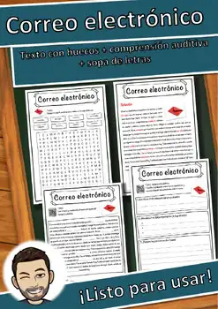
Correo electrónico – Ficha de lectura: texto con huecos, comprensión auditiva y sopa de letras
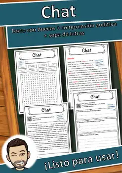
Chat – Ficha de lectura: texto con huecos, comprensión auditiva y sopa de letras

Avión – Ficha de lectura: texto con huecos, comprensión auditiva y sopa de letras
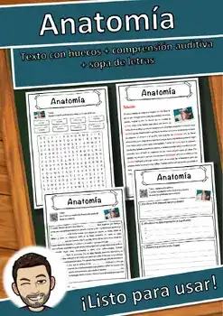
Anatomía – Ficha de lectura: texto con huecos, comprensión auditiva y sopa de letras
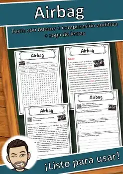
Airbag – Ficha de lectura: texto con huecos, comprensión auditiva y sopa de letras
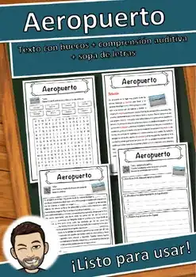
Aeropuerto – Ficha de lectura: texto con huecos, comprensión auditiva y sopa de letras
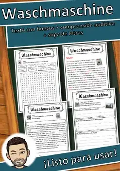
Lavadora – Ficha de lectura: texto con huecos, comprensión auditiva y sopa de letras
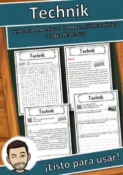
Tecnología – Ficha de lectura: texto con huecos, comprensión auditiva y sopa de letras
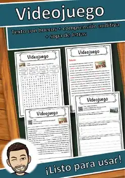
Videojuego – Ficha de lectura: texto con huecos, comprensión auditiva y sopa de letras
Teléfono inteligente – Ficha de lectura: texto con huecos, comprensión auditiva y sopa de letras
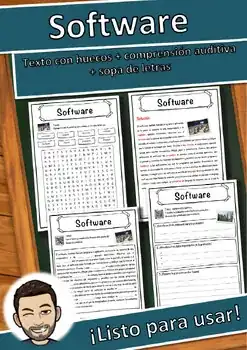
Software – Ficha de lectura: texto con huecos, comprensión auditiva y sopa de letras
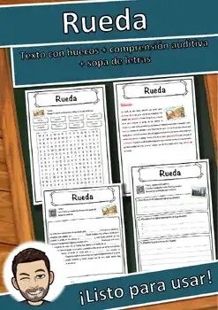
Rueda – Ficha de lectura: texto con huecos, comprensión auditiva y sopa de letras
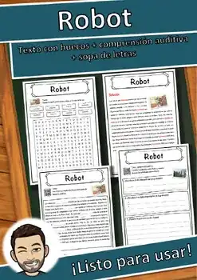
Robot – Ficha de lectura: texto con huecos, comprensión auditiva y sopa de letras
Restaurante automático – Ficha de lectura: texto con huecos, comprensión auditiva y sopa de letras
Ratón – Ficha de lectura: texto con huecos, comprensión auditiva y sopa de letras
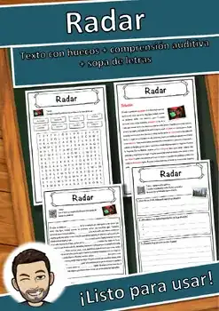
Radar – Ficha de lectura: texto con huecos, comprensión auditiva y sopa de letras
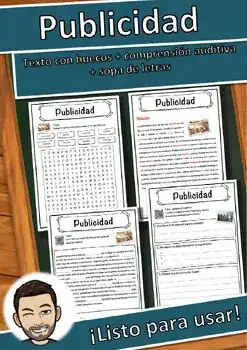
Publicidad – Ficha de lectura: texto con huecos, comprensión auditiva y sopa de letras
Patente – Ficha de lectura: texto con huecos, comprensión auditiva y sopa de letras
Programación – Ficha de lectura: texto con huecos, comprensión auditiva y sopa de letras
Portaviones – Ficha de lectura: texto con huecos, comprensión auditiva y sopa de letras
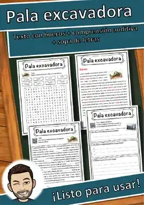
Pala excavadora – Ficha de lectura: texto con huecos, comprensión auditiva y sopa de letras
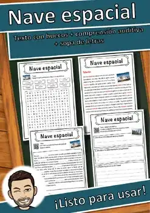
Nave espacial – Ficha de lectura: texto con huecos, comprensión auditiva y sopa de letras
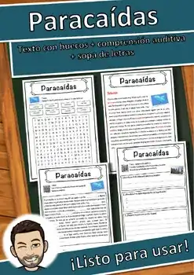
Paracaídas – Ficha de lectura: texto con huecos, comprensión auditiva y sopa de letras
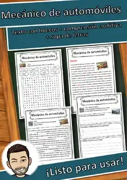
Mecánico de automóviles – Ficha de lectura: texto con huecos, comprensión auditiva y sopa de letras
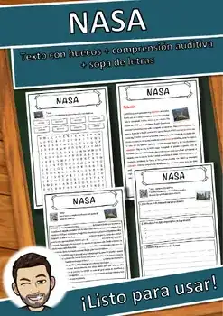
NASA – Ficha de lectura: texto con huecos, comprensión auditiva y sopa de letras
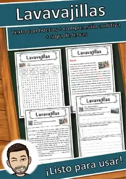
Lavavajillas – Ficha de lectura: texto con huecos, comprensión auditiva y sopa de letras
Magnetófono de bobina abierta – Ficha de lectura: texto con huecos, comprensión auditiva y sopa de letras
Internet – Ficha de lectura: texto con huecos, comprensión auditiva y sopa de letras
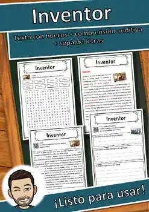
Inventor – Ficha de lectura: texto con huecos, comprensión auditiva y sopa de letras
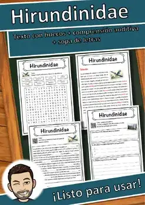
Hirundinidae – Ficha de lectura: texto con huecos, comprensión auditiva y sopa de letras
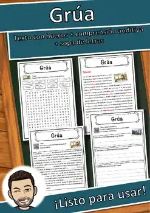
Grúa – Ficha de lectura: texto con huecos, comprensión auditiva y sopa de letras
No se encontraron recursos. Prueba con otra palabra o con otro filtro.